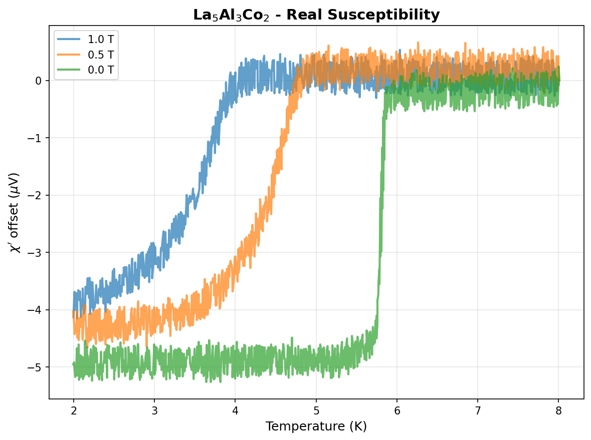
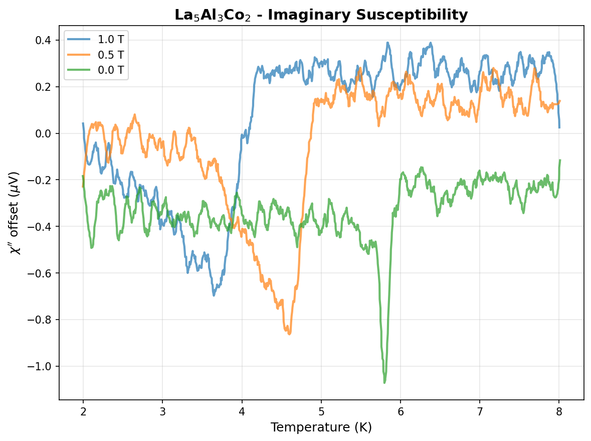
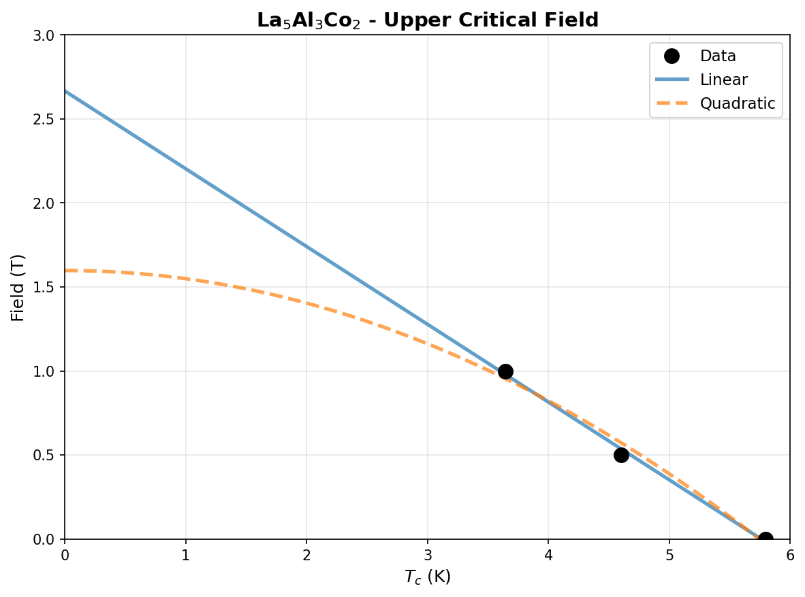
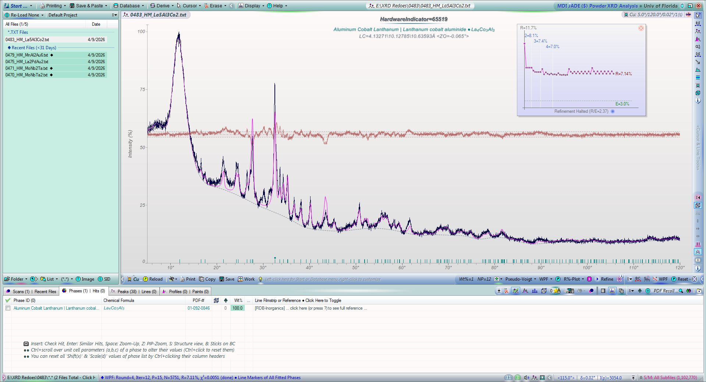
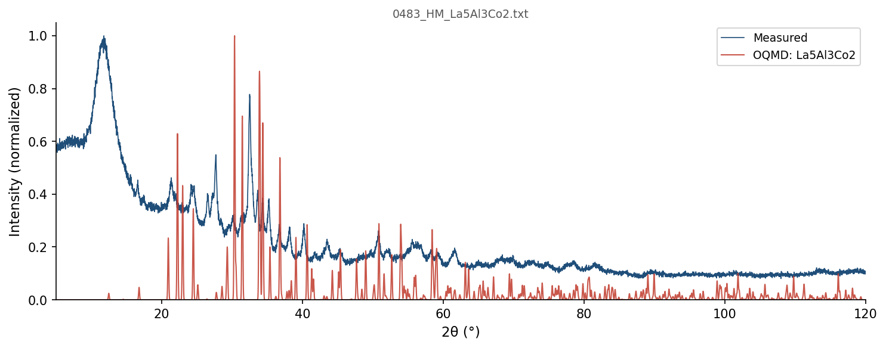
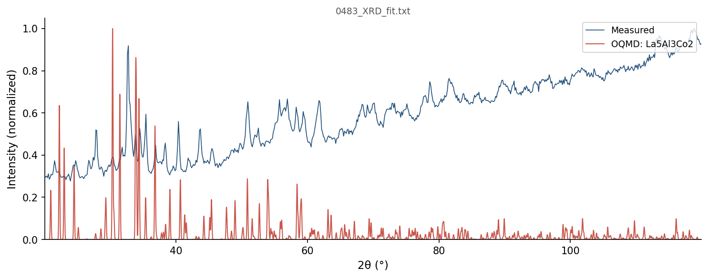

| Element | Expected (mol frac) | Measured (mol frac) | Δ (mol frac) | Δ (%) |
|---|---|---|---|---|
| Al | 0.3000 | 0.2998 | -0.0002 | -0.02% |
| Co | 0.2000 | 0.2001 | +0.0001 | +0.01% |
| La | 0.5000 | 0.5000 | +0.0000 | +0.00% |
438 entries in the Al-Co-La element system (16 on hull, 45 ICSD-tagged). Stability in meV/atom. Sorted most stable first.
| Composition | Stability (meV/atom) | ΔE (meV/atom) | ICSD | Space | Entry | CIF |
|---|---|---|---|---|---|---|
Al1Co1 |
-152 | -614.2 | Al-Co | 1977652 | CIF | |
Al2La1 |
-62 | -497.1 | ✓ | Al-La | 10483 | CIF |
Al9Co2 |
-29 | -332.3 | ✓ | Al-Co | 10412 | CIF |
Al5Co2 |
-25 | -466.0 | ✓ | Al-Co | 19163 | CIF |
Al3La1 |
-24 | -448.3 | Al-La | 318521 | CIF | |
Co1La1 |
-19 | -125.1 | Co-La | 1481418 | CIF | |
Al4Co1La1 |
-19 | -522.8 | ✓ | Al-Co-La | 2617 | CIF |
Al1La1 |
-16 | -410.0 | ✓ | Al-La | 647442 | CIF |
Co1La3 |
-11 | -105.8 | ✓ | Co-La | 19328 | CIF |
Al11La3 |
-9 | -393.2 | ✓ | Al-La | 10487 | CIF |
Co17La2 |
-8 | -47.7 | Co-La | 1280451 | CIF | |
Co1La2 |
-5 | -120.4 | Co-La | 1481419 | CIF | |
Al3Co2La5 |
-1 | -329.8 | Al-Co-La | 1782939 | CIF | |
Al1 |
+0 | 0.0 | Al | 1215750 | CIF | |
Co1 |
+0 | -16.9 | ✓ | Co | 637416 | CIF |
La1 |
+0 | 0.0 | La | 1215430 | CIF | |
Al1La1 |
+0 | -410.0 | Al-La | 1915836 | CIF | |
Al1Co1 |
+0 | -614.1 | Al-Co | 1522297 | CIF | |
Al1Co1 |
+0 | -614.1 | ✓ | Al-Co | 2015345 | CIF |
Al1Co1 |
+0 | -614.1 | Al-Co | 305856 | CIF | |
Al3La1 |
+0 | -448.2 | Al-La | 1967094 | CIF | |
Al1La1 |
+0 | -409.9 | Al-La | 1965791 | CIF | |
Al3La1 |
+0 | -448.2 | ✓ | Al-La | 10484 | CIF |
Al2La1 |
+0 | -496.9 | Al-La | 1590073 | CIF | |
Al1Co1 |
+0 | -613.8 | Al-Co | 1485051 | CIF | |
Al1Co1 |
+0 | -613.7 | Al-Co | 1485020 | CIF | |
Al1Co1 |
+1 | -613.6 | Al-Co | 1217513 | CIF | |
Al1 |
+1 | 0.8 | ✓ | Al | 8100 | CIF |
Al1 |
+1 | 0.8 | Al | 1214503 | CIF | |
Al1 |
+1 | 0.9 | Al | 1485019 | CIF | |
Al1 |
+1 | 1.0 | Al | 1215661 | CIF | |
Co3La7 |
+1 | -113.4 | Co-La | 1821159 | CIF | |
Al5Co2 |
+1 | -464.7 | ✓ | Al-Co | 5772 | CIF |
Al1 |
+2 | 1.8 | Al | 1214592 | CIF | |
Co1La2 |
+3 | -117.8 | Co-La | 1365419 | CIF | |
Al1Co1 |
+4 | -610.3 | ✓ | Al-Co | 10411 | CIF |
Al1 |
+4 | 4.3 | Al | 1215839 | CIF | |
Al1La1 |
+5 | -404.8 | Al-La | 1782637 | CIF | |
Al13La16 |
+6 | -361.6 | ✓ | Al-La | 25960 | CIF |
Al1La3 |
+6 | -198.8 | Al-La | 323065 | CIF | |
Al1La3 |
+6 | -198.6 | ✓ | Al-La | 2025547 | CIF |
Al3Co1 |
+8 | -411.8 | Al-Co | 1787083 | CIF | |
Co3La2 |
+8 | -97.1 | ✓ | Co-La | 29383 | CIF |
Al13Co4 |
+9 | -392.4 | ✓ | Al-Co | 684912 | CIF |
Al3Co2La3 |
+10 | -400.9 | Al-Co-La | 1965587 | CIF | |
La1 |
+13 | 12.9 | ✓ | La | 17557 | CIF |
La1 |
+13 | 13.0 | ✓ | La | 30646 | CIF |
La1 |
+13 | 13.0 | La | 1214539 | CIF | |
La1 |
+14 | 14.1 | La | 1216053 | CIF | |
Al1 |
+14 | 14.2 | Al | 1215394 | CIF | |
Al4La1 |
+15 | -352.3 | ✓ | Al-La | 10485 | CIF |
Al4La1 |
+15 | -352.2 | ✓ | Al-La | 10486 | CIF |
Co1 |
+17 | 0.0 | ✓ | Co | 594128 | CIF |
Al2La1 |
+18 | -478.8 | Al-La | 1521672 | CIF | |
La1 |
+18 | 18.4 | La | 1215697 | CIF | |
Co1 |
+19 | 2.2 | ✓ | Co | 2030128 | CIF |
Al3La1 |
+19 | -429.1 | ✓ | Al-La | 2012815 | CIF |
Al2Co3La5 |
+19 | -269.4 | Al-Co-La | 1782776 | CIF | |
Al1La2 |
+20 | -253.7 | Al-La | 1520686 | CIF | |
Al1 |
+20 | 20.2 | Al | 1216017 | CIF | |
Al5Co2La1 |
+20 | -525.5 | Al-Co-La | 1783191 | CIF | |
La1 |
+20 | 20.5 | La | 1214628 | CIF | |
Al3Co1 |
+22 | -398.5 | Al-Co | 1795943 | CIF | |
Al1Co1 |
+23 | -590.9 | Al-Co | 337398 | CIF | |
Al12La1 |
+25 | -116.3 | Al-La | 1783532 | CIF | |
Al1La3 |
+25 | -179.5 | ✓ | Al-La | 2017556 | CIF |
Al1La3 |
+26 | -179.4 | Al-La | 1236345 | CIF | |
Al1La3 |
+26 | -179.4 | Al-La | 1235115 | CIF | |
Co1 |
+26 | 9.5 | ✓ | Co | 592630 | CIF |
Al7La2 |
+27 | -378.1 | Al-La | 1472157 | CIF | |
Co5La1 |
+28 | -31.4 | ✓ | Co-La | 20148 | CIF |
Co7La2 |
+29 | -42.1 | ✓ | Co-La | 2025449 | CIF |
Al17La2 |
+29 | -164.5 | Al-La | 1453229 | CIF | |
Co5La1 |
+30 | -30.0 | ✓ | Co-La | 19396 | CIF |
Al1 |
+33 | 32.6 | ✓ | Al | 2029852 | CIF |
Al1 |
+33 | 32.8 | Al | 1215304 | CIF | |
Al1 |
+33 | 33.1 | Al | 1215215 | CIF | |
Co2La3 |
+36 | -85.9 | Co-La | 426524 | CIF | |
La1 |
+37 | 37.3 | ✓ | La | 2031604 | CIF |
La1 |
+37 | 37.4 | La | 1215340 | CIF | |
Co1 |
+39 | 22.3 | Co | 1485028 | CIF | |
Al1La3 |
+39 | -165.6 | Al-La | 297457 | CIF | |
Al3La5 |
+40 | -267.5 | Al-La | 1796203 | CIF | |
La1 |
+40 | 40.0 | La | 1215251 | CIF | |
Co2La1 |
+44 | -48.9 | ✓ | Co-La | 17113 | CIF |
Co2La1 |
+44 | -47.9 | Co-La | 1591049 | CIF | |
Al5La1 |
+45 | -261.2 | Al-La | 1519601 | CIF | |
Al5La1 |
+45 | -261.2 | ✓ | Al-La | 2029801 | CIF |
Co1 |
+48 | 31.0 | Co | 1214873 | CIF | |
Al3La1 |
+49 | -399.2 | Al-La | 1795553 | CIF | |
Al1Co28 |
+52 | -5.9 | Al-Co | 1577293 | CIF | |
Al1Co9La2 |
+53 | -105.1 | Al-Co-La | 1782674 | CIF | |
Al6La1 |
+54 | -207.8 | Al-La | 1794705 | CIF | |
Al1 |
+56 | 55.7 | Al | 1214770 | CIF | |
Al1 |
+56 | 55.7 | Al | 1577399 | CIF | |
Al1La1 |
+56 | -353.8 | Al-La | 1217532 | CIF | |
Al13Co4 |
+58 | -343.2 | Al-Co | 1437799 | CIF | |
Al1La1 |
+58 | -351.7 | Al-La | 306678 | CIF | |
Al1La1 |
+59 | -351.4 | Al-La | 338220 | CIF | |
Co7La2 |
+61 | -10.0 | ✓ | Co-La | 663560 | CIF |
Co1 |
+61 | 44.1 | ✓ | Co | 592136 | CIF |
Al1 |
+62 | 61.6 | Al | 1214859 | CIF | |
Al2Co4La3 |
+64 | -276.9 | Al-Co-La | 1964836 | CIF | |
Al1 |
+64 | 64.2 | Al | 1489260 | CIF | |
Al5La3 |
+65 | -410.6 | Al-La | 1799741 | CIF | |
Al1Co2La2 |
+65 | -252.9 | Al-Co-La | 1276596 | CIF | |
Al6Co1 |
+66 | -195.5 | Al-Co | 1338793 | CIF | |
Co1 |
+66 | 49.3 | Co | 1577561 | CIF | |
Al4Co25 |
+67 | -114.8 | Al-Co | 1577606 | CIF | |
Al11Co4 |
+69 | -372.9 | Al-Co | 1782484 | CIF | |
Al3Co5 |
+72 | -393.0 | Al-Co | 1782957 | CIF | |
Al9Co7 |
+74 | -497.2 | Al-Co | 1791802 | CIF | |
Al8Co4La1 |
+74 | -471.6 | Al-Co-La | 1783529 | CIF | |
Co3La1 |
+75 | -1.4 | Co-La | 1450459 | CIF | |
Al4La3 |
+75 | -372.1 | Al-La | 1796494 | CIF | |
Co1 |
+76 | 58.7 | Co | 1489243 | CIF | |
Co4La1 |
+78 | 12.0 | Co-La | 1796607 | CIF | |
Al1 |
+79 | 78.7 | Al | 1214948 | CIF | |
Al1 |
+79 | 78.7 | Al | 1280406 | CIF | |
Al4Co3 |
+79 | -485.6 | Al-Co | 1471974 | CIF | |
Al13La4 |
+83 | -342.3 | Al-La | 1483998 | CIF | |
Al1Co3 |
+86 | -229.9 | Al-Co | 1485026 | CIF | |
Al1Co3 |
+86 | -229.9 | Al-Co | 1484953 | CIF | |
Al5Co24 |
+88 | -134.7 | Al-Co | 1577343 | CIF | |
Al3Co2 |
+89 | -455.7 | Al-Co | 1797267 | CIF | |
Al1Co3 |
+91 | -224.2 | Al-Co | 1782360 | CIF | |
Al5Co1La1 |
+93 | -382.9 | Al-Co-La | 1790375 | CIF | |
Al1Co14 |
+93 | -3.5 | Al-Co | 1489233 | CIF | |
Al1 |
+96 | 95.5 | Al | 1521877 | CIF | |
Al1 |
+96 | 95.5 | Al | 1521872 | CIF | |
Al1 |
+96 | 95.5 | ✓ | Al | 2015051 | CIF |
Al1 |
+96 | 95.6 | Al | 1215126 | CIF | |
Al1Co3 |
+98 | -217.6 | ✓ | Al-Co | 2015364 | CIF |
Al1Co3 |
+98 | -217.5 | Al-Co | 321396 | CIF | |
La1 |
+99 | 99.4 | La | 1214895 | CIF | |
Co1 |
+103 | 85.7 | ✓ | Co | 594127 | CIF |
Co1 |
+103 | 85.9 | Co | 1215853 | CIF | |
Al1 |
+103 | 103.4 | Al | 1477121 | CIF | |
Co1 |
+103 | 86.5 | Co | 1280314 | CIF | |
Co1 |
+104 | 86.7 | ✓ | Co | 2031488 | CIF |
Co1 |
+111 | 94.0 | Co | 1790951 | CIF | |
Al1Co3 |
+111 | -204.3 | Al-Co | 2082206 | CIF | |
Al14Co1 |
+112 | -10.2 | Al-Co | 1489235 | CIF | |
La1 |
+112 | 112.3 | La | 1214806 | CIF | |
Co1 |
+115 | 97.8 | ✓ | Co | 2030127 | CIF |
Co1 |
+115 | 98.4 | Co | 1791473 | CIF | |
Co1 |
+116 | 99.2 | Co | 1908163 | CIF | |
Co1 |
+118 | 101.0 | Co | 1522296 | CIF | |
Al1Co3 |
+123 | -192.6 | ✓ | Al-Co | 2015334 | CIF |
Al1Co3 |
+123 | -192.4 | Al-Co | 345882 | CIF | |
Co1 |
+129 | 111.8 | ✓ | Co | 631034 | CIF |
La1 |
+129 | 128.9 | La | 1214984 | CIF | |
Al1 |
+130 | 129.7 | Al | 1215037 | CIF | |
La1 |
+131 | 131.2 | ✓ | La | 8130 | CIF |
La1 |
+132 | 131.9 | La | 1215162 | CIF | |
Al3Co1 |
+132 | -288.0 | Al-Co | 2086045 | CIF | |
La1 |
+132 | 132.3 | La | 1522060 | CIF | |
La1 |
+132 | 132.3 | La | 1522057 | CIF | |
Co1 |
+133 | 116.4 | Co | 1477104 | CIF | |
Al7Co2La3 |
+134 | -387.8 | Al-Co-La | 1793759 | CIF | |
Al28Co1 |
+135 | 71.8 | Al-Co | 1577635 | CIF | |
Al3Co1 |
+137 | -283.4 | Al-Co | 2121393 | CIF | |
Al3Co1 |
+137 | -282.8 | ✓ | Al-Co | 2034512 | CIF |
Co1 |
+140 | 122.8 | Co | 1972145 | CIF | |
Al5Co3 |
+142 | -385.9 | Al-Co | 1340552 | CIF | |
Al1Co3 |
+145 | -170.9 | Al-Co | 303718 | CIF | |
Al12Co1 |
+145 | 4.2 | Al-Co | 1477096 | CIF | |
Al3La1 |
+145 | -302.9 | Al-La | 343007 | CIF | |
La1 |
+146 | 146.4 | La | 1214717 | CIF | |
La1 |
+147 | 147.0 | La | 1215073 | CIF | |
Al1 |
+147 | 147.5 | Al | 1485619 | CIF | |
Al7La3 |
+148 | -329.3 | Al-La | 1789584 | CIF | |
Al1Co3 |
+150 | -165.4 | Al-Co | 2080576 | CIF | |
Al1Co12 |
+154 | 44.8 | Al-Co | 1477094 | CIF | |
Al1 |
+155 | 154.6 | Al | 1487142 | CIF | |
Al2Co11 |
+157 | -43.3 | Al-Co | 1477151 | CIF | |
Al1 |
+162 | 161.9 | Al | 1485144 | CIF | |
Co1La1 |
+166 | 41.1 | Co-La | 304905 | CIF | |
Al11Co4 |
+167 | -274.6 | Al-Co | 1489205 | CIF | |
Al5Co1 |
+169 | -136.1 | Al-Co | 1438128 | CIF | |
Al3Co1 |
+171 | -249.3 | Al-Co | 324802 | CIF | |
Co1La1 |
+171 | 46.0 | Co-La | 1219795 | CIF | |
Al1La3 |
+174 | -30.9 | Al-La | 307979 | CIF | |
Co13La1 |
+174 | 136.6 | ✓ | Co-La | 31214 | CIF |
Al2Co11 |
+175 | -25.2 | Al-Co | 1477039 | CIF | |
Al1Co4 |
+178 | -78.0 | Al-Co | 1489160 | CIF | |
Al2Co1 |
+178 | -321.0 | Al-Co | 1485396 | CIF | |
Al1 |
+182 | 182.3 | Al | 1214681 | CIF | |
Co1 |
+184 | 167.3 | Co | 2069777 | CIF | |
Al4Co11 |
+185 | -150.4 | Al-Co | 1489265 | CIF | |
Co1 |
+187 | 170.2 | Co | 1485781 | CIF | |
Al2La3 |
+189 | -139.2 | Al-La | 425562 | CIF | |
Co1 |
+192 | 175.1 | Co | 2066502 | CIF | |
Co1 |
+193 | 175.8 | Co | 2069795 | CIF | |
Co1 |
+193 | 175.8 | Co | 2069798 | CIF | |
Co1 |
+193 | 175.8 | Co | 2069801 | CIF | |
Co1 |
+193 | 175.8 | Co | 2069804 | CIF | |
Co1 |
+193 | 175.8 | Co | 2069819 | CIF | |
Co1 |
+193 | 175.8 | Co | 2069822 | CIF | |
Co1 |
+193 | 175.8 | Co | 2069792 | CIF | |
Co1 |
+193 | 175.8 | Co | 2069810 | CIF | |
Co1 |
+193 | 175.8 | Co | 2069816 | CIF | |
Co1 |
+193 | 175.8 | Co | 2069825 | CIF | |
Co1 |
+193 | 175.8 | Co | 2069813 | CIF | |
Co1 |
+193 | 175.8 | Co | 2069789 | CIF | |
Co1 |
+193 | 175.8 | Co | 2069807 | CIF | |
Al1Co3 |
+193 | -122.1 | Al-Co | 2121316 | CIF | |
Al1Co3 |
+193 | -122.1 | Al-Co | 2085909 | CIF | |
Co1 |
+194 | 176.7 | Co | 1972143 | CIF | |
Al3Co1 |
+195 | -224.9 | Al-Co | 300312 | CIF | |
Al3Co1 |
+195 | -224.9 | Al-Co | 1484979 | CIF | |
Al3Co1 |
+195 | -224.9 | Al-Co | 1484909 | CIF | |
Al4Co9 |
+196 | -188.9 | Al-Co | 1477002 | CIF | |
Al5Co1 |
+198 | -107.1 | Al-Co | 1485345 | CIF | |
Al1Co5 |
+199 | -16.9 | Al-Co | 1487068 | CIF | |
Co1 |
+199 | 182.6 | Co | 1487127 | CIF | |
Co1 |
+201 | 184.6 | Co | 2069765 | CIF | |
Al1Co2 |
+202 | -213.5 | Al-Co | 1489211 | CIF | |
Al5Co1 |
+202 | -102.9 | Al-Co | 1435758 | CIF | |
Co1 |
+202 | 185.3 | Co | 2069759 | CIF | |
Al3Co1 |
+204 | -216.3 | Al-Co | 349288 | CIF | |
Co1 |
+206 | 189.4 | Co | 2069783 | CIF | |
Co1 |
+206 | 189.4 | Co | 2069750 | CIF | |
Co1 |
+206 | 189.4 | Co | 2069786 | CIF | |
Co1 |
+206 | 189.4 | Co | 2069771 | CIF | |
Co1 |
+206 | 189.4 | Co | 2069753 | CIF | |
Co1 |
+206 | 189.4 | Co | 2069780 | CIF | |
Co1 |
+206 | 189.4 | Co | 2069762 | CIF | |
Co1 |
+206 | 189.4 | Co | 2069774 | CIF | |
Co1 |
+206 | 189.4 | Co | 2069756 | CIF | |
Co1 |
+207 | 189.7 | Co | 2066493 | CIF | |
Al5Co1 |
+207 | -97.3 | Al-Co | 1487090 | CIF | |
Co1 |
+208 | 191.2 | Co | 2069717 | CIF | |
Co1 |
+209 | 191.7 | Co | 2069732 | CIF | |
Al3Co1 |
+209 | -211.2 | Al-Co | 1799582 | CIF | |
Al5Co1 |
+210 | -94.7 | Al-Co | 1438127 | CIF | |
Al2Co1 |
+211 | -288.2 | Al-Co | 1485380 | CIF | |
Al5Co1 |
+211 | -93.6 | Al-Co | 1485477 | CIF | |
Al1Co5 |
+212 | -4.4 | Al-Co | 1487165 | CIF | |
Co1 |
+212 | 195.2 | Co | 1214517 | CIF | |
Co1 |
+212 | 195.3 | Co | 1215675 | CIF | |
Al3Co10 |
+213 | -79.9 | Al-Co | 1477007 | CIF | |
Co1 |
+216 | 199.4 | Co | 2069711 | CIF | |
Al3Co1 |
+217 | -202.8 | Al-Co | 2082356 | CIF | |
Co1 |
+217 | 200.4 | Co | 1485147 | CIF | |
Co1 |
+220 | 202.7 | Co | 2069729 | CIF | |
Al5Co1 |
+220 | -85.0 | Al-Co | 1450577 | CIF | |
Al11Co5 |
+220 | -264.6 | Al-Co | 1791482 | CIF | |
Al5Co1 |
+220 | -84.7 | Al-Co | 1436234 | CIF | |
Co1 |
+221 | 204.5 | Co | 1215408 | CIF | |
Co1 |
+222 | 205.3 | Co | 1216031 | CIF | |
Co3La1 |
+223 | 147.4 | Co-La | 320569 | CIF | |
Al3Co1 |
+224 | -195.7 | Al-Co | 2080712 | CIF | |
Al3Co2 |
+225 | -320.4 | Al-Co | 1489149 | CIF | |
Co1 |
+226 | 209.0 | Co | 1215318 | CIF | |
Al1Co2 |
+228 | -187.1 | Al-Co | 1485513 | CIF | |
Co1 |
+231 | 214.4 | Co | 1215229 | CIF | |
Al2Co11 |
+232 | 30.9 | Al-Co | 1477126 | CIF | |
Al1Co1 |
+233 | -381.6 | Al-Co | 1782616 | CIF | |
Co1 |
+234 | 216.8 | Co | 1214606 | CIF | |
Al2Co3 |
+234 | -260.5 | Al-Co | 1489221 | CIF | |
Co1 |
+238 | 220.8 | Co | 2069747 | CIF | |
Al3Co10 |
+239 | -53.4 | Al-Co | 1477021 | CIF | |
Al1Co2 |
+243 | -172.0 | Al-Co | 1487178 | CIF | |
Al17Co12 |
+243 | -311.2 | Al-Co | 1577125 | CIF | |
Al15Co1 |
+244 | 129.5 | Al-Co | 1790028 | CIF | |
Al2Co1 |
+246 | -252.9 | Al-Co | 1489280 | CIF | |
Al1Co1La2 |
+247 | -62.2 | Al-Co-La | 384692 | CIF | |
Al5Co8 |
+251 | -224.9 | Al-Co | 1476993 | CIF | |
Co1La3 |
+253 | 147.2 | Co-La | 319507 | CIF | |
Al1Co5 |
+253 | 37.2 | Al-Co | 1485500 | CIF | |
Al3Co10 |
+253 | -39.1 | Al-Co | 1477072 | CIF | |
Al1Co3 |
+256 | -59.9 | Al-Co | 314260 | CIF | |
Al2Co1 |
+257 | -241.8 | Al-Co | 1489148 | CIF | |
Al1Co1 |
+262 | -352.6 | Al-Co | 2083172 | CIF | |
Al7Co6 |
+265 | -322.9 | Al-Co | 1477066 | CIF | |
Al1Co2 |
+265 | -149.9 | Al-Co | 1489199 | CIF | |
Al1Co1 |
+266 | -348.4 | Al-Co | 1227979 | CIF | |
Al1Co5 |
+266 | 50.4 | Al-Co | 1485826 | CIF | |
Al1Co2 |
+267 | -147.7 | Al-Co | 1591011 | CIF | |
Al1Co2 |
+267 | -147.7 | Al-Co | 1485185 | CIF | |
Al1Co5 |
+270 | 54.4 | Al-Co | 1487147 | CIF | |
La1 |
+271 | 271.0 | La | 1215608 | CIF | |
Al4Co9 |
+278 | -106.9 | Al-Co | 1477068 | CIF | |
Al1 |
+280 | 279.6 | Al | 1215572 | CIF | |
Al5Co8 |
+282 | -194.2 | Al-Co | 1477010 | CIF | |
Al4Co9 |
+283 | -101.9 | Al-Co | 1477031 | CIF | |
Co1 |
+284 | 267.1 | Co | 2069849 | CIF | |
Co1 |
+284 | 267.1 | Co | 2069843 | CIF | |
Al16Co13 |
+284 | -294.3 | Al-Co | 1577332 | CIF | |
Co1 |
+285 | 267.7 | Co | 2069861 | CIF | |
Co1 |
+285 | 267.7 | Co | 2069864 | CIF | |
Co1 |
+285 | 267.9 | Co | 2069846 | CIF | |
Co1 |
+285 | 268.1 | Co | 2069852 | CIF | |
Co1 |
+285 | 268.1 | Co | 2069831 | CIF | |
Co1 |
+286 | 268.8 | Co | 2069840 | CIF | |
Co1 |
+286 | 269.2 | Co | 2069837 | CIF | |
Co1 |
+287 | 269.8 | Co | 2069858 | CIF | |
Co1 |
+287 | 269.8 | Co | 2069828 | CIF | |
Al1Co2 |
+288 | -127.0 | Al-Co | 1487094 | CIF | |
Al3Co1 |
+290 | -130.3 | Al-Co | 1520891 | CIF | |
Al3La1 |
+292 | -156.7 | Al-La | 301981 | CIF | |
Al1Co1 |
+295 | -318.8 | Al-Co | 1485563 | CIF | |
Al1Co1La1 |
+296 | -114.9 | Al-Co-La | 860831 | CIF | |
Al1Co2 |
+296 | -118.7 | Al-Co | 1487113 | CIF | |
Al25Co4 |
+299 | 46.7 | Al-Co | 1577257 | CIF | |
Co1 |
+299 | 282.0 | Co | 2066484 | CIF | |
Al1Co2 |
+300 | -115.5 | Al-Co | 1489146 | CIF | |
Al13Co16 |
+301 | -251.8 | Al-Co | 1577160 | CIF | |
Co1La1 |
+301 | 175.8 | Co-La | 325989 | CIF | |
Co1La1 |
+301 | 176.0 | Co-La | 1104091 | CIF | |
Al1Co1 |
+302 | -312.6 | Al-Co | 1790924 | CIF | |
Al12Co17 |
+302 | -209.6 | Al-Co | 1577258 | CIF | |
Al6Co7 |
+305 | -263.0 | Al-Co | 1477009 | CIF | |
Al13Co3 |
+307 | -32.7 | Al-Co | 1791192 | CIF | |
Al1Co1 |
+307 | -306.8 | Al-Co | 1487048 | CIF | |
Al1Co2La1 |
+309 | -61.1 | Al-Co-La | 413398 | CIF | |
Al17Co12 |
+313 | -241.3 | Al-Co | 1577176 | CIF | |
Al16Co13 |
+318 | -260.0 | Al-Co | 1577254 | CIF | |
Co1La1 |
+320 | 194.7 | Co-La | 336447 | CIF | |
Al3La1 |
+321 | -127.6 | Al-La | 312523 | CIF | |
Al4Co1 |
+321 | -34.4 | Al-Co | 1489198 | CIF | |
Al1Co1 |
+321 | -292.8 | Al-Co | 2085773 | CIF | |
Al3Co1 |
+322 | -98.2 | Al-Co | 310854 | CIF | |
Co1 |
+322 | 305.1 | Co | 1972142 | CIF | |
Al1Co1 |
+322 | -291.9 | Al-Co | 1485847 | CIF | |
Al1Co5 |
+328 | 112.2 | Al-Co | 1603484 | CIF | |
Al10Co3 |
+336 | -59.4 | Al-Co | 1477141 | CIF | |
Al8Co7 |
+337 | -254.0 | Al-Co | 1489207 | CIF | |
Al5Co8 |
+337 | -139.0 | Al-Co | 1477124 | CIF | |
Co1 |
+342 | 324.8 | Co | 1214784 | CIF | |
Al1Co1 |
+343 | -271.6 | Al-Co | 2080356 | CIF | |
Al1Co1 |
+343 | -271.6 | Al-Co | 2120975 | CIF | |
Al7Co8 |
+346 | -228.5 | Al-Co | 1489259 | CIF | |
Al1La1 |
+346 | -64.0 | Al-La | 327762 | CIF | |
Al11Co2 |
+346 | 64.8 | Al-Co | 1477011 | CIF | |
Al1Co2 |
+352 | -62.7 | Al-Co | 1485474 | CIF | |
Al1Co2 |
+354 | -61.2 | Al-Co | 1485478 | CIF | |
Al1Co1 |
+357 | -257.0 | Al-Co | 326940 | CIF | |
Al1Co1 |
+358 | -256.6 | Al-Co | 2082056 | CIF | |
Co1 |
+358 | 340.7 | Co | 1215051 | CIF | |
Al3Co1 |
+359 | -61.2 | Al-Co | 1487007 | CIF | |
Al3Co1 |
+365 | -55.3 | Al-Co | 1487093 | CIF | |
Co1 |
+365 | 348.1 | Co | 1972141 | CIF | |
Al11Co2 |
+367 | 85.5 | Al-Co | 1476983 | CIF | |
Al1La1 |
+370 | -40.3 | Al-La | 1227998 | CIF | |
Al10Co3 |
+372 | -23.0 | Al-Co | 1477059 | CIF | |
Al24Co5 |
+373 | 58.3 | Al-Co | 1577231 | CIF | |
Al2Co1 |
+375 | -124.1 | Al-Co | 1489177 | CIF | |
Al12Co17 |
+377 | -134.6 | Al-Co | 1577280 | CIF | |
Al7Co8 |
+382 | -192.8 | Al-Co | 1489263 | CIF | |
Co1La1 |
+385 | 259.8 | Co-La | 1228960 | CIF | |
Al2Co1 |
+387 | -111.7 | Al-Co | 1231465 | CIF | |
Al8Co5 |
+391 | -143.0 | Al-Co | 1477082 | CIF | |
Al13Co16 |
+395 | -157.5 | Al-Co | 1577627 | CIF | |
Al10Co3 |
+400 | 4.6 | Al-Co | 1477038 | CIF | |
Al2Co1 |
+400 | -98.5 | Al-Co | 1487016 | CIF | |
Al2Co1 |
+401 | -98.3 | Al-Co | 1487162 | CIF | |
Co1 |
+403 | 385.8 | Co | 1214962 | CIF | |
Al7Co8 |
+415 | -159.4 | Al-Co | 1489132 | CIF | |
Al1Co3 |
+416 | 100.3 | Al-Co | 1487173 | CIF | |
Al11Co4 |
+418 | -23.8 | Al-Co | 1489122 | CIF | |
Al3Co2 |
+418 | -126.7 | Al-Co | 1489253 | CIF | |
Co3La1 |
+424 | 348.0 | Co-La | 345055 | CIF | |
Al8Co7 |
+429 | -162.2 | Al-Co | 1489231 | CIF | |
Al1Co1 |
+431 | -183.5 | Al-Co | 2082506 | CIF | |
Co1La3 |
+433 | 327.1 | Co-La | 310027 | CIF | |
Al8Co7 |
+434 | -157.3 | Al-Co | 1489229 | CIF | |
Al7Co5 |
+438 | -118.3 | Al-Co | 1487141 | CIF | |
Co1 |
+444 | 427.0 | Co | 1215140 | CIF | |
Co3La1 |
+447 | 371.0 | Co-La | 298429 | CIF | |
Al9Co4 |
+447 | -33.8 | Al-Co | 1477120 | CIF | |
Al11Co2 |
+448 | 166.5 | Al-Co | 1477071 | CIF | |
Al1Co3 |
+449 | 133.1 | Al-Co | 1487062 | CIF | |
Al7Co5 |
+449 | -107.2 | Al-Co | 1487115 | CIF | |
Co3La1 |
+485 | 408.9 | Co-La | 308965 | CIF | |
Al8Co5 |
+488 | -46.5 | Al-Co | 1477092 | CIF | |
Al2Co1La1 |
+490 | -22.6 | Al-Co-La | 510245 | CIF | |
Al5Co7 |
+493 | -22.1 | Al-Co | 1487103 | CIF | |
Al1Co1 |
+493 | -121.1 | Al-Co | 2084716 | CIF | |
Al1 |
+501 | 500.8 | Al | 1215928 | CIF | |
La1 |
+502 | 502.1 | La | 1215786 | CIF | |
Al3Co2 |
+503 | -42.1 | Al-Co | 1489272 | CIF | |
La1 |
+507 | 506.7 | La | 1215875 | CIF | |
Al5Co1 |
+508 | 203.7 | Al-Co | 1487088 | CIF | |
Al5Co7 |
+508 | -6.1 | Al-Co | 1487045 | CIF | |
Al5Co1 |
+514 | 209.8 | Al-Co | 1487118 | CIF | |
Al1Co1 |
+517 | -97.4 | Al-Co | 1485552 | CIF | |
Al5Co7 |
+520 | 5.4 | Al-Co | 1487025 | CIF | |
Al1La1 |
+526 | 116.0 | Al-La | 1105863 | CIF | |
Al8Co5 |
+533 | -1.7 | Al-Co | 1477090 | CIF | |
Al1Co1 |
+534 | -80.2 | Al-Co | 1487029 | CIF | |
Al1Co1 |
+534 | -80.1 | Al-Co | 1485451 | CIF | |
Al6Co7 |
+537 | -31.0 | Al-Co | 1477144 | CIF | |
Co1La1 |
+545 | 419.7 | Co-La | 1225474 | CIF | |
Al9Co4 |
+549 | 68.2 | Al-Co | 1477114 | CIF | |
Al5Co7 |
+555 | 40.2 | Al-Co | 1487111 | CIF | |
Co1 |
+566 | 549.0 | Co | 1214695 | CIF | |
Al7Co5 |
+578 | 21.1 | Al-Co | 1487061 | CIF | |
La1 |
+578 | 578.5 | La | 1215964 | CIF | |
Al7Co5 |
+585 | 28.6 | Al-Co | 1487032 | CIF | |
Al8Co1 |
+591 | 387.9 | Al-Co | 1472390 | CIF | |
Al1La2 |
+601 | 327.2 | Al-La | 1593122 | CIF | |
Al7Co5 |
+618 | 61.3 | Al-Co | 1487144 | CIF | |
Al9Co4 |
+626 | 144.5 | Al-Co | 1477133 | CIF | |
Al7Co5 |
+629 | 72.1 | Al-Co | 1487177 | CIF | |
Al5Co1 |
+630 | 325.1 | Al-Co | 1436233 | CIF | |
Al7Co6 |
+641 | 53.6 | Al-Co | 1477060 | CIF | |
Al5Co7 |
+671 | 156.1 | Al-Co | 1487056 | CIF | |
Al5Co7 |
+679 | 164.7 | Al-Co | 1487035 | CIF | |
Co1 |
+697 | 680.2 | Co | 1972140 | CIF | |
Co1 |
+717 | 700.4 | Co | 1215764 | CIF | |
Co1La1 |
+721 | 596.3 | Co-La | 1219281 | CIF | |
Al2Co1 |
+723 | 223.7 | Al-Co | 1485855 | CIF | |
Al2Co3 |
+734 | 239.7 | Al-Co | 425542 | CIF | |
Al2Co1 |
+743 | 244.1 | Al-Co | 1487034 | CIF | |
Al1 |
+747 | 746.7 | Al | 1215483 | CIF | |
Al2Co1 |
+756 | 257.1 | Al-Co | 1590045 | CIF | |
Al2Co1 |
+756 | 257.1 | Al-Co | 1485117 | CIF | |
Co1 |
+766 | 749.4 | Co | 1215586 | CIF | |
Al1Co1La1 |
+809 | 398.1 | Al-Co-La | 941345 | CIF | |
Al1Co1 |
+819 | 204.6 | Al-Co | 1105041 | CIF | |
Al1Co8 |
+824 | 674.3 | Al-Co | 1472389 | CIF | |
Al1La1 |
+924 | 514.4 | Al-La | 1224512 | CIF | |
La1 |
+995 | 994.5 | La | 1215519 | CIF | |
Al1Co1 |
+1012 | 397.9 | Al-Co | 1224493 | CIF | |
Al2La1 |
+1017 | 519.9 | Al-La | 1231484 | CIF | |
Al1Co1La1 |
+1187 | 776.3 | Al-Co-La | 832129 | CIF | |
Al1La1 |
+1204 | 794.2 | Al-La | 1218318 | CIF | |
Co1La2 |
+1240 | 1120.0 | Co-La | 1593135 | CIF | |
Co2La1 |
+1300 | 1207.7 | Co-La | 1232446 | CIF | |
Al2Co1 |
+1505 | 1005.7 | Al-Co | 1238125 | CIF | |
Al1Co1 |
+1540 | 925.5 | Al-Co | 1218299 | CIF | |
Al1La2 |
+1623 | 1349.8 | Al-La | 1240682 | CIF | |
Co1 |
+2256 | 2239.5 | Co | 1215942 | CIF | |
Al1Co2 |
+2841 | 2425.9 | Al-Co | 1238124 | CIF | |
Co1La3 |
+8896 | 8790.1 | Co-La | 299485 | CIF | |
Co1La3 |
+10530 | 10424.5 | Co-La | 343993 | CIF |



| Model | Hc2(0) (T) | Tc (K) |
|---|---|---|
| Linear | 2.667 | 5.761 |
| Quadratic | 1.598 | 5.746 |

| Phase | Formula | Crystal System | Space Group | Lattice Parameters (Å / °) | Bragg-R |
|---|---|---|---|---|---|
| Aluminum Lanthanum | lanthanum aluminide | LaAl | Orthorhombic | Cmcm (63) | a = 9.409(97) b = 7.764(79) c = 5.816(57) | 8.68% |


Al0.32La0.68
| Tc = 3.23 K
| 10.1103/PhysRevB.19.193
41 known superconductor(s) in the La5Al3Co2 element system. Sorted by Tc descending. ■ closest composition ■ closest Tc
| Compound | Formula | Tc (K) | Reference |
|---|---|---|---|
| La1-xCex | La1 |
6.24 | Search |
| La | La1 |
6.23 | Search |
| Al1La3 | Al1La3 |
6.16 | Search |
| fcc-La | La1 |
6.06 | 10.1103/PhysRevB.8.3194 |
| La3Al | Al1La3 |
6.00 | Search |
| beta-La | La1 |
6.00 | Search |
| La | La1 |
5.90 | 10.1103/PhysRevLett.23.1375 |
| La3Al | Al1La3 |
5.80 | Search |
| alpha-La | La1 |
5.00 | 10.1103/PhysRevB.53.8238 |
| La | La1 |
4.94 | 10.1103/PhysRev.164.510 |
| alpha-La | La1 |
4.90 | Search |
| La | La1 |
4.86 | 10.1103/PhysRevLett.23.1375 |
| La1-xAlx | Al0.18La0.82 |
4.65 | 10.1103/PhysRevB.19.193 |
| La1-xAlx | Al0.2La0.8 |
4.43 | 10.1103/PhysRevB.19.193 |
| La3Co | Co1La3 |
4.40 | Search |
| La1-xAlx | Al0.22La0.78 |
4.30 | 10.1103/PhysRevB.19.193 |
| Co1La3 | Co1La3 |
4.28 | Search |
| La3Co | Co1La3 |
4.00 | Search |
| La1-xAlx | Al0.25La0.75 |
3.98 | 10.1103/PhysRevB.19.193 |
| La1-xAlx | Al0.27La0.73 |
3.82 | 10.1103/PhysRevB.19.193 |
| La1 | La1 |
3.30 | Search |
| LaAl2 | Al2La1 |
3.27 | Search |
| LaAl2 | Al2La1 |
3.25 | Search |
| LaAl2 | Al2La1 |
3.24 | Search |
| La1-xAlx | Al0.32La0.68 |
3.23 | 10.1103/PhysRevB.19.193 |
| LaAl2 | La1Al2 |
3.23 | Search |
| LaAl2 | Al2La1 |
3.23 | Search |
| Al2La1 | Al2La1 |
2.24 | Search |
| Al | Al1 |
1.80 | 10.1103/PhysRevLett.73.1412 |
| Al1 | Al1 |
1.30 | Search |
| Al | Al1 |
1.18 | 10.1103/PhysRevLett.35.104 |
| Al | Al1 |
1.18 | 10.1103/PhysRev.148.353 |
| Al | Al1 |
1.18 | 10.1103/PhysRev.165.522 |
| Al1 | Al1 |
1.18 | 10.1103/PhysRev.138.A1428 |
| Al1 | Al1 |
1.17 | Search |
| Al | Al1 |
1.16 | 10.1103/PhysRev.114.676 |
| Al | Al1 |
1.16 | Search |
| Al | Al1 |
1.16 | Search |
| LaAlO3/SrTiO3 | La1Al1O3 |
0.36 | Search |
| Al2La1 | Al2La1 |
0.30 | Search |
| LaAlO3/SrTiO3 | La1Al1O3 |
0.30 | Search |